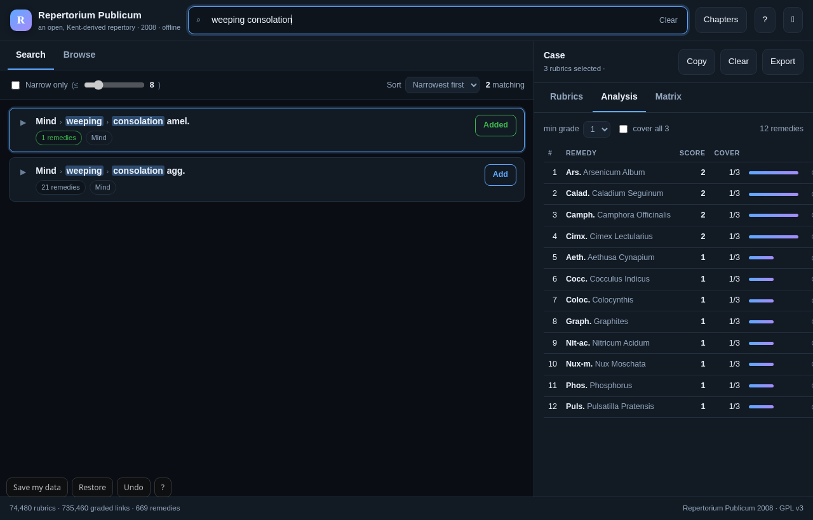

The app is below, not a picture of it.
Live · same files · offlinePress a button and the frame moves: the search, a one-remedy rubric, a case built from three rubrics, and the analysis that ranks them. Nothing here talks to a server.

What it does
Three things, done properlySearch in repertory language
anxiety night, thirstless, weeping consolation.
Results come back narrowest first, because the rubric with three remedies is the one that
narrows a case; the one with 250 tells you almost nothing.
Build the case as you read
Add a rubric, attach a note to it, remove it, clear the case — and keep more than one case, each named and separate. It is saved in this browser and included in every export: text, CSV, JSON, clipboard, or a print sheet that is the case itself.
Repertorise by grade
Remedies ranked by the sum of grades and the rubrics covered, with a minimum-grade filter, “cover all rubrics”, an exclude that strikes through instead of hiding, a remedy × rubric matrix — and, on any remedy, why it ranks there: which of your rubrics it covers, and which it misses.
The grades are the printed ones
Typography, not inventionEvery one of the 735,460 links carries the grade the printed repertory gave it — 3 bold, 2 italic, 1 plain. The app counts them; it does not re-weight them.
Set bold in the original. The remedy the repertory insists on.
Set in italic. Present, but not the leading characteristic.
Plain text. Noted, and no more — the great majority of the record.
The numbers, measured
From the embedded dataset| What | Count |
|---|---|
| Rubrics | 74,480 |
| Graded remedy links | 735,460 |
| Remedies | 669 |
| Chapters | 41 |
| The whole app, in one file | 1.9 MB, gzip + base64 |
| Requests to the network | 0 |
| Runtime dependencies | 0 |
| Tests · audit | 14 + 30 passing · 82 checks |
What it refuses to do
By design, not by omissionWhat this text is — precisely
The data is Repertorium Publicum by Vladimir Polony (2008), published as part of the OpenRep source code and licensed GPL v3.
It is not Kent's Repertory of the Homoeopathic Materia Medica, 1897 first edition. It has its own chapter structure — separate Clinical, Appetite, Blood and Heart & Circulation chapters, which Kent does not have — and its own additions.
Earlier releases of this app described it as Kent 1897. That was wrong, and it has been corrected throughout: the page, the manifest, the app's own footer and the README all say Repertorium Publicum 2008.
The structured, graded JSON is also published in
homoeopathic-materia-medica-repertory-json
under repertory/repertorium-publicum-2008/.
Get it
- Windows · portable EXEkent-repertory-explorer-portable.exe Download
- Android · signed APKkent-repertory-explorer.apk Download
- Web · offline PWAopens in the browser, installs, works with no network Open
- Source · GPL v3 dataevery release carries the source and the JSON Releases
Each release is published with its icon and its notes: what changed, what was measured, and what was fixed — the same marks used here.
Run it yourself
There is nothing to install and nothing to build. The app is one file:
# the shortest path — no server at all open docs/play/index.html # or serve it, so the service worker can cache it for offline use git clone https://github.com/drsamonline/kent-repertory-explorer cd kent-repertory-explorer python3 -m http.server -d docs 8000 # → http://localhost:8000/
On a phone, “Add to home screen” installs it; after the first load it opens with no network. The service worker serves the HTML network-first, so a new release lands on your next visit — and the footer of both the page and the app prints a build stamp, so you can tell which one you have.
Deep links
The app answers to its hash, so a scene can be linked, bookmarked or driven from a page like this one — offline, with no router and no dependency:
#q=anxiety+night | run a search |
#tab=analysis | open a panel |
#demo=case | a worked case |
#remedy=Ars | every rubric for a remedy |
#rubric=1234 | one rubric, in full |
Panels: search, browse,
case, analysis, matrix. Scenes: search,
narrow, case, analysis.
Also: named cases — switch, rename and keep several at once; click any remedy to see every rubric it appears in, or exactly which of your rubrics it covers and which it misses; scoring you can see — 3·2·1, 1·1·1 or 9·4·1, with the arithmetic printed under the control and in every export; undo with Ctrl+Z; and a print sheet that is the case, not the interface.
A study tool, and it says so
For practitioners and students. Not medical advice, and not a substitute for the judgement of a qualified practitioner. The ranking is a shortlist to study in the materia medica.